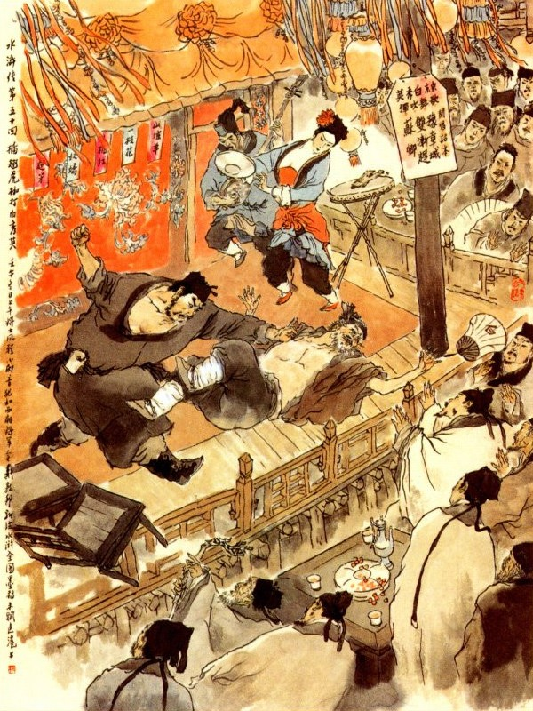
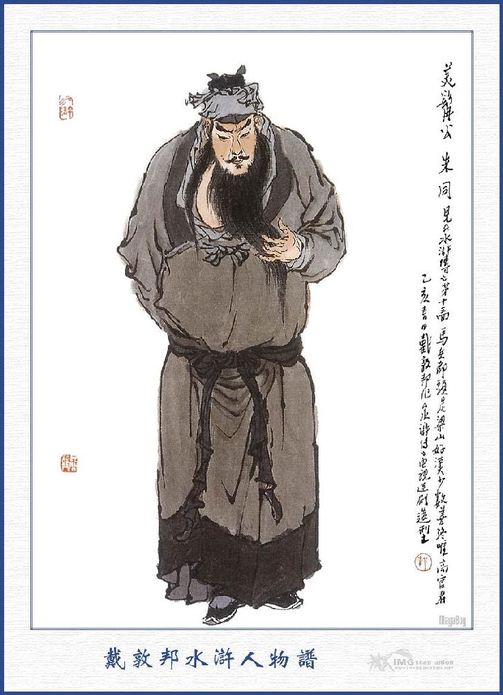
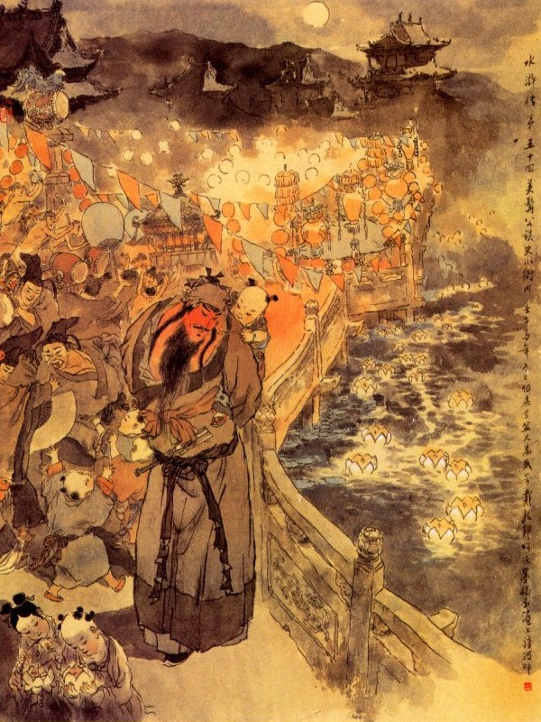

Khi đó Tiều Cái, Tống Giang nghe nói có Lôi Hoành đến thì lấy làm cả mừng, bèn lập tức cùng với quân sư Ngô Dụng đi xuống núi để nghinh tiếp. Khi ra tới bến Kim Sa, đã thấy Chu Quý chở thuyền đưa Lôi Hoành đến đó.
Tống Giang trông thấy Lôi Hoành vội vàng vái chào mà rằng:
- Đã lâu nay xa cách tôn nhan trong lòng thì lấy làm khao khát. Ngày nay không biết vì cớ gì mà ân nhân lại rời gót qua đây? Cho chúng tôi được gặp như vậy?
Lôi Hoành đáp lại mà rằng:
- Tiểu đệ vâng lệnh quan, sai sang phủ Đông Xương có việc công, đường đi qua đây, nhân thấy tiểu lâu la đòi tiền mãi lộ, sau đệ xưng tên ra thì Chu Đầu Lĩnh biết rồi có ý lưu lại mà đưa lên hầu ngài.
Tống Giang nghe đến đó, vội nói lên rằng:
- Nếu thực là trời đưa ân nhân đến đây cho chúng tôi được gặp thì xin đón ân nhân lên chơi trên trại, để anh em trò chuyện, cho thoả lòng mong nhớ bấy lâu.
Nói đoạn mời Lôi Hoành lên đài sảnh gọi các Đầu Lĩnh ra chào rồi làm rượu thiết đãi luôn mấy ngày ở đó.
Tiều Cái hỏi đến chuyện Chu Đồng. Lôi Hoành đáp rằng:
- Chu Đồng từ khi nhận chức Tiết Cấp coi đề lao ở bản huyện, Quan Huyện mới rất có lòng tín nhiệm mà thân mến lắm.
Tống Giang lấy lời uyển chuyển khuyên Lôi Hoành vào đảng ở đó. Lôi Hoành từ chối; Vì có mẹ già không thể nào mà bỏ đi được, xin đợi khi lão mẫu trăm năm mất rồi, sẽ theo lên nhập đảng.
Đoạn rồi Lôi Hoành bái từ Tống Giang cùng các Đầu Lĩnh để xin đi. Tống Giang hết sức cầm giữ không được, bèn, lấy các đồ tiền bạc ra để tiễn tặng Lôi Hoành và cùng các Đầu Lĩnh đưa chân xuống núi.
Khi Lôi Hoành đi rồi, Tiều Cái, Tống Giang về đến đại trại, lại mời quân sư Ngô Dụng lên Tụ Nghĩa Sảnh, để cắt đặt cho trong sơn trại.
Ngô Dụng cùng Tống Giang bàn định cẩn thận rồi đến hôm sau họp các Đầu Lĩnh, để chia cắt chức việc: Tôn Tân, Cố Đại Tẩu nguyện mở tửu điếm như xưa, nay hai vợ chồng ra coi tửu điếm để thay Đồng Uy, Đồng Mãnh; Thời Thiên cho ra giúp đỡ Thạch Dũng; Nhạc Hòa cho ra giúp đỡ Chu Quý Trịnh Thiên Thọ giúp đỡ Lý Lập. Bốn mặt tửu điếm Đông, Tây, Nam, Bắc đều đặt hai vị Đầu Lĩnh để bán rượu, bán thịt và chiêu nạp hảo hán bốn phương. Nhất Trượng Thanh, Vương Nụy Hổ cho hạ trại ở sau núi, để coi xét lừa ngựa, Tiểu trại bến Kim Sa, cho anh em Đồng Uy, Đồng Mãnh ra coi; Tiểu trại bên Áp Thủy giao cho chú cháu Trâu Uyên, Trâu Nhuận đóng, Hoàng Tín, Yến Thuận lãnh quân mã bản bộ đóng ở đường cái trước núi; Giải Trân, Giải Bảo coi đệ nhất quan; Đỗ Thiên, Tống Vạn coi đệ nhị quan ở thành Uyển Tử; Lưu Đường, Mục Hoằng coi đệ tam quan ở trước sơn trại; ba anh em họ Nguyễn coi giữ thủy trại Nam Núi, Mạnh Khang vẫn coi việc đóng chiến thuyền; Lý Ứng, Đỗ Hưng, Tưởng Kính coi sóc tiền lương của cải trong sơn trại. Đào Tôn Vượng, Tiết Vĩnh sửa đắp thành trì trong Lương Sơn Bạc; Hầu Kiện chuyên may áo giáp, bào, mũ, cờ, quạt cùng các đồ áo trận, Chu Phú, Tống Thanh coi sóc yến tiệc, Mục Xuân, Lý Vân đốc thúc việc làm nhà làm trại; Tiêu Nhượng, Kim Đại Kiện giữ việc ứng tiếp tân khách cùng thư tín công văn, Bùi Tuyên coi quân chính coi giữ việc thưởng công phạt tội; Lã Phương, Quách Thịnh, Tôn Lập, Âu Bằng, Mã Lân, Đặng Phi, Dương Lâm cùng Bạch Thắng đều phân phái ra tám mặt trại để yên nghỉ. Tiều Cái, Tống Giang, Ngô Dụng ở giữa trại trên núi; Hoa Vinh, Tần Minh ở bên tả; Lâm Xung, Đới Tung ở bên hữu, Lý Tuấn, Lý Quỳ ở trại phía đằng trước; Trương Hoành, Trương Thuận ở trại phía sau. Còn Dương Hùng, Thạch Tú thì chia coi hai bên nhà Tụ Nghĩa Sảnh.
Các hàng Đầu Lĩnh đã cắt đặt xong rồi, cùng nhau luân lưu làm việc để vui mừng yến ẩm, ai lấy đều cổ võ hân hoan, trong sơn trại rất là thịnh vượng.
Thành Uyển Tử, vũng Liên Nhi,
Triều đình riêng một biên thùy kém ai?
Từ đây riêng chiếm cõi trời,
Áo xiêm chỉ chấp những người cơ mi.
Nói về Lôi Hoành từ khi bái biệt bọn Lương Sơn, liền khoác khăn gói, vác thanh đao, xăm xăm về tới Vận Thành vào nhà chào mẹ và thay xống áo, lấy công văn đưa vào trình huyện rồi mới trở về yên nghỉ. Từ hôm ấy trở đi mỗi ngày hai buổi vào hầu việc quan, theo như thướng lệ.
Một hôm chàng ở trong huyện trở, ra một mình lững thững đương đi về phía bên đông, chợt thấy sau lưng có người gọi rằng:
- Đô Đầu về bao giờ thế?
Lôi Hoành quay lại nom thì thấy tên Lý Tiểu Nhị ở đó, liền đáp rằng:
- Ta mới về được mấy hôm nay.
Lý Tiểu Nhị nói:
- Đô Đầu đi vắng luôn, chắc không biết ở đây có một người con gái hát, rất đẹp rất tài, tên là Bạch Tú Anh ở Đông Kinh mới đến hẳn? Bữa trước nó có đến chào Đô Đầu, nhưng ngài còn đi vắng, hiện nay vẫn khai diễn ở ngoài phố luôn luôn. Mỗi ngày lại có một trò khác nhau hoặc múa hoặc đàn, hoặc ca, nghề gì cũng khéo, người xem đông như kiến cỏ vậy. Đô Đầu thử đến nom qua xem, thực là một vai đào hiếm có.
Lôi Hoành đang khi cô liêu, nghe nói vậy, liền bảo Lý Tiểu Nhị dẫn đến để xem. Khi tới nơi, Lôi Hoành ngồi ghế thứ nhất ở dẫy đầu, ngồi vào đó rồi tên Lý Tiểu Nhị quanh quẩn lẩn đi chơi mất.
Bấy giờ thấy một ông già buộc khăn xéo, mặc áo lụa bông, thắt dây lưng lụa, tay cầm cái quạt chạy ra sân khấu nói mấy câu khai mào:
- Lão tôi người ở Đông Kinh, tên là Bạch Ngọc Kiều, năm nay tuổi tác, nhờ có con gái là Bạch Tú Anh múa hát đàn sáo để dâng hiến các quan, các quan chiếu cố.
Nói đoạn mấy tiếng thanh la đánh phèng phèng rồi Tú Anh lên sân khấu vái chào bốn mặt mà vác thanh la khua ầm cả lên.
Đọan rồi dứt tiếng thanh la, Tú Anh liền đọc bốn câu rằng:
Chim mới kêu vang, chim cũ buồn,
Dê già gầy yếu bén dê non,
Đời người khổ nhất nghề sinh lý,
Thua cái uyên ương bay liệng luôn.
Lôi Hoành nghe xong vỗ tay khen hay.
Bạch Tú Anh nói:
- Hôm nay trên tờ cáo bạch đã nói rõ bản trò, vậy tôi xin diễn tích này là tích uẩn tạ phong lưu, rất chiều lý thú, tên gọi"Thành Dự chương theo đuổi Tô Khanh" để cống hiến các ngài khán giả.
Nói đoạn lại hát, hát một lúc lại nói. Người ngồi xem mấy ghế đầu, đều vỗ tay khen ngợi luôn mồm.
Dám đâu khoe khéo khoe tài,
Cũng mong nhờ lượng các ngài thông minh.
Đọc đến đó lại tiếp luôn rằng:
- Thôi, các quan đã có lời ban khen, con hãy xuống, bây giờ đến lượt rung trống đây.
Bạch Tú Anh bèn cầm lấy cái khay, miệng đọc luôn mấy câu:
- Mau đến chỗ lợi, mau đến chỗ lợi, tay nâng đến nơi, tất là phát đạt.
Bạch Ngọc Kiều lại nói:
- Con đi qua một lượt, các quan đương mong để thưởng cho con đấy.
Bạch Tú Anh liền bưng cái khay đi xin thưởng. Trước hết đến trước mặt Lôi Hoành, ngồi ở đầu dây.
Lôi Hoành sờ túi toan thưởng, bất đồ không có đồng tiền nào, bèn bảo Tú Anh rằng:
- Hôm nay quên không đem tiền, để mai ta thưởng một thể.
Tú Anh cười rằng:
- Tiền đầu bất lợi, sau còn mong chi? Quan ngồi chỗ đó đáng lắm, xin ngài rộng tay cho người khác trông vào.
Lôi Hoành đỏ mặt nên đáp rằng:
- Không phải là ta tiếc, nhưng hôm nay quên, không giắt đi, để mai vậy.
- Ngài đã đi nghe hát, lẽ nào lại không giắt tiền?
- Ta thưởng ngay đến ba lạng cũng được, nhưng ngặt vì hôm nay không giắt đi.
Bạch Tú Anh lại nói:
- Thưa ngài hiện nay một đồng không có, còn nói gì đến ba lạng? Ngài bảo chúng tôi trông mơ đỡ khát, vẽ bánh đỡ đói, như thế thì.
Bạch Ngọc Kiều thấy vậy bảo con rằng:
- Con rõ khéo hoài công, không đi xin các ông nhà quan, các ông thành thị khác, còn cứ đứng hỏi làm gì ông ấy mãi? Thôi đi hỏi các ngài biết điều kia thôi.
Lôi Hoành lấy làm khó chịu hỏi luôn:
- Ta đây lại không biết điều hay sao?
Bạch Ngọc Kiều nói:
- Nếu ông biết được ngón chơi thì có lẽ chó mọc sừng mất.
Chúng nghe nói đều đứng cả dậy. Lôi Hoành nổi giận đùng đùng quát mắng rằng:
- Quân chó này dám nói xấc với ta à?
Bạch Ngọc Kiều nói:
- Tôi bảo bác là con bò nữa bác làm gì?
Bấy giờ có kẻ nhận biết Lôi Hoành mắng bảo Bạch Ngọc Kiều rằng:
- Không được thế, ông ấy là Lôi Đô Đầu ở huyện đó.
Bạch Ngọc Kiều nói:
- Chỉ sợ là"Lư câu đầu" mà thôi.

Lôi Hoành không sao nín nổi, đương ngồi ở ghế, nhảy tót lên sân khấu, nắm lấy Bạch Ngọc Kiều mà đánh tát một thôi, vêu cả môi sưng cả má lên. Chúng thấy Lôi Hoành đánh hăng quá bèn túm đến can ngăn mà khuyên giải Lôi Hoành về. Đoạn rồi người trong rạp đều tản mác mà đi về cả. Nguyên Bạch Tú Anh với Quan Huyện mới ở Vận Thành, vẫn có tư tình đi lại đã lâu, nên ngày nay mới đến huyện Vận Thành, để kiếm ăn về nghề hát diễn. Bấy giờ chị ả đào thấy phụ thân bị Lôi Hoành đánh nhiều vết thương nặng, bèn lập tức thuê một cỗ xe kiệu vào kêu Quan Huyện là Lôi Hoành đánh bố, đuổi cả người trong rạp hát và ý toan hiếp tróc cả mình.
Quan Huyện nghe nói cả giận, lập tức bảo cho Bạch Ngọc Kiều làm đơn kiện rồi sai ra khám nghiệm vết thương và lấy chứng cớ phân minh tất cả. Bấy giờ cũng có nhiều người tử tế với Lôi Hoành cũng nói lót với Quan Huyện, song cái thế lực phấn son sai khiến nhà quan làm cho quan cũng phải mê man mờ mịt, không còn nghe ai nói một câu nào nữa. Quan liền lập tức sai người bắt Lôi Hoành vào hụyện vật cổ ra đánh, bắt cung nhận các tội rồi sai đóng gông làm hiệu cho thiên hạ coi.
Chị ả đào còn muốn ra tay yêu nghiệt, xui Tri Huyện bắt dong Lôi Hoành ra trước cửa rạp cho đê nhục một thể.
Hôm sau chỉ ả đào đến diễn hát, Tri Huyện ta bèn vâng lời, sai lính dong Lôi Hoành ra rạp hát. Bọn lính đó cũng là một bọn làm việc quan với nhau, nên có bụng nể Lôi Hoành mà dắt lánh đi một nơi, không nỡ đem dong ra rạp hát.
Chị ả đào ta lại tức mình, chạy đến tìm đám lính đó mà bảo rằng:
- Quan Huyện sai các anh dong hắn ra trước rạp hát sao các anh không đến? Để lát nữa tôi vào kêu với Quan Huyện, xem các anh nói ra thế nào?
Bọn lính thấy vậy liền nói rằng:
- Nương Tử bất tất phải làm thế, để chúng tôi dong đi bây giờ.
Tú Anh nói:
- Nếu vậy thì sau đây tôi sẽ thưởng cho các anh.
Tụi lính bất đắc dĩ phải bảo với Lôi Hoành rằng:
- Đô Đầu phiền lòng cho chúng tôi đưa đi qua ngoài rạp hát một tý rồi sẽ về, không có thì nguy với con yêu tinh này mất.
Nói đoạn liền trói Lôi Hoành mà dong ra ngoài phố. Đương khi đám người huyên náo thì chợt đâu người mẹ Lôi Hoành đi đưa cơm đến đó.
Người mẹ trông thấy con như vậy, liền kêu khóc òa lên rồi mắng bọn lính rằng:
- Các anh cùng với con ta cũng là một bọn làm việc trong nha cả, nỡ nào các anh đem lòng thế cho đang? Người ta ai giữ được trọn đời không có việc trái bao giờ?
Đám lính ấy đáp:
- Thưa cụ, không phải chúng con muốn như thế làm gì? Nhưng ngặt vì có nguyên cáo đi kèm bắt chúng con phải thế, chúng con không làm thế nào mà cưỡng được! Nếu không thế, lát nữa họ vào nói với Quan huyện thì chúng con khổ cả.
Mẹ Lôi Hoành nói:
- Có lẽ nào người đi kiện lại được phép bắt dong người ta đi như thế?
Tụi lính lại sẽ nói:
- Thôi, cụ không biết người ta thân với quan lắm, sểnh một tý là họ nói vớí quan nguy cho cả chúng con.
Bà mẹ nghe nói, liền tự tay cởi trói cho Lôi Hoành rồi miệng rứa lác ầm lên rằng:
- Quân hèn mạt dám ỷ thế như vậy, bà cứ cởi trói ra xem nó làm sao?
Bạch Tú Anh ngồi trong hàng thấy vậy chạy ra vội hỏi:
- Vừa rồi mụ già nói gì thế?
Bà mẹ Lôi Hoành nổi cơn tam bành lên, bèn chỉ tay vào mặt Tú Anh mà mắng rằng:
- Đồ chết băm vằm mổ xẻ kia, đồ đĩ rạc đĩ rày kia. Làm gì mày dám mắng bà?
Bạch Tú Anh nghe nói, dựng đứng lông my, trợn tròn hai mắt mà rằng:
- Con hùm già này, con ăn nhặt này mày nói xấc với bà hay sao?
Mẹ Lôi Hoành nói:
- Bà mắng mày phỏng mày làm gì được? Có lẽ mày làm Quan Huyện ở huyện Vận Thành này hẳn?
Bạch Tú Anh cả giận, giơ tay tát ngay vào mẹ Lôi Hoành ngã lăn ra phố, bà mẹ vừa gượng dậy được, Bạch Tú Anh lại sấn vào tát lấy tát để không thôi.
Bấy giờ Lôi Hoành đương căm tức trong bụng, lại thấy mẹ già bị đánh như vậy, liền bầng bầng nổi giận giơ đầu gông lên, nhè giữa óc phang cho Tú Anh một cái, vỡ tan óc ra mà nằm ngay xuống đó. Chúng túm vào cứu gọi thì Bạch Tú Anh đã trợn mắt nghiến răng chết cứng ra rồi, không sao cứu được nữa. Chúng liền đem Lôi Hoành vào để trình với Tri Huyện. Tri Huyện lập tức sai đòi Lý Trưởng, lân bang, cùng các nha lại giải áp Lôi Hoành, ra khám nghiệm tử thi rồi đem về nha lập án, Lôi Hoành nhất nhất cung nhận, không từ chối một câu nào. Tri Huyện truyền cho mẹ Lôi Hoành tạm về rồi đóng gông Lôi Hoành bỏ xuống ngục.
Khi đó Mỹ Nhiêm Công, Chu Đồng làm Tiết Cấp coi lao, thấy sự thể như vậy, không biết có cách gì cứu được Lôi Hoành, bèn mua cơm rượu thịt cá vào cho Lôi Hoành ăn uống và sai đám lính ngục tìm một nơi sạch sẽ kín đáo cho nằm. Được một lát người mẹ Lôi Hoành đem cơm vào trong ngục, khóc lóc bảo với Chu Đồng rằng:
- Lão tôi ngoài sáu mươi tuổi đầu, chỉ trông mong có đứa con đó mà thôi. Xin Tiết Cấp nghĩ đến tình anh em khi trước mà thương đến lão tôi mà trông nom che chở giúp cho thì già dẫu chết cũng không dám quên ơn Tiết Cấp.
Chu Đồng nói:
- Được, cụ cứ yên tâm, chỗ anh em thế nào tôi cũng trông nom cẩn thận. Từ nay bất tất cụ phải đem cơm nước vào đây, đã có tôi liệu biện. Nếu có cơ hội gì cứu được, tức khắc tôi xin làm ngay, cụ đừng ngại.
Mẹ Lôi Hoành nghe nói liền bái tạ ra về.
Chu Đồng nghĩ suốt ngày đêm không có kế gì để cứu cho Lôi Hoành được, bèn nhờ người đến đút lót với Tri Huyện và nói khắp mọi nơi, để cầu giảm tội đi.
Tri Huyện xưa nay vốn yêu thích Chu Đồng, song vì Lôi Hoành đánh mất người yêu thì trong lòng lấy làm tức giận, không thể nào dung thứ đi được. Sau lão Bạch Ngọc Kiều lại thúc giục Tri Huyện mau mau phải lập thành văn án, bắt Lôi Hoành bỏ tù sáu mươi ngày, mãn hạ rồi kết đoán giải lên Tế Châu để xử trị.
Khi mãn hạn sáu mươi ngày, phòng giấy đem công văn lên nộp trước ở phủ Tế Châu rồi Chu Đồng vâng lệnh dẫn mười mấy tên lính ngục giải Lôi Hoành đi. Chu Đồng giải Lôi Hoành ra khỏi huyện Vận Thành chừng mươi dặm đường, tới một nơi tửu điếm xa xa, Chu Đồng bảo với mọi người rằng:
- Chúng ta hãy vào đây uống rượu. Đương khi uống rượu, Chu Đồng cất lẻn đem Lôi Hoành ra một chỗ vắng, tháo gông tha Lôi Hoành ra mà bảo rằng:
- Hiền đệ mau mau về nhà, đem thân mẫu lập tức đi một nơi mà trốn tránh, còn ở đây Quan Tư bắt bớ để mặc mình tôi chịu cho.
Lôi Hoành nói:
- Một mình tiểu đệ chạy thoát thì rất dễ, nhưng còn Ca Ca ở đây thì làm sao tránh khỏi sự nguy hiểm được! Việc đó tiểu đệ làm thế không đang tâm!
Chu Đông nói:
- Hiền đệ không biết: Tri Huyện tức giận vì đánh chết người yêu, nên văn án đều kết vào tội tử, nay giải lên phủ thì tất phải đền mạng chứ chẳng chơi, vậy tôi tha cho hiền đệ ra không có lẽ mắc vào tử tội được. Vả chăng tôi đây không có bố mẹ già trông cậy, những gia tài của tôi khả dĩ đem ra mà bồi thường cũng được, ngại chi? Còn hiền đệ thì mẹ già đầu bạc non nước một thân, thôi hiền đệ phải đi mau mau mới được, đừng nghĩ quanh nghĩ quẩn thêm phiền.
Lôi Hoành nghe nói, lạy tạ Chu Đồng rồi theo lối cửa sau trốn thẳng về nhà, thu thập khăn gói, dẫn mẹ già lên núi Lương Sơn để ẩn thân ở đó. Khi đó Chu Đồng vất cái gông xuống đám cỏ rồi chạy về bảo với đám lính ngục rằng:
- Chết nỗi Lôi Hoành chạy mất rồi, ta làm thế nào được?
Chúng nói:
- Nếu thế phải chạy về nhà hắn bắt ngay.
Chu Đồng nhận lời như vậy, song có ý dùng dằng, liệu chừng cho Lôi Hoành chạy đã thoát xa xa rồi mới trùng trình dẫn chúng về huyện để cáo thú.
Chu Đồng bẩm với Tri Huyện rằng:
- Chúng tôi đi đường lỡ không cẩn thận, bị Lôi Hoành trốn mất lúc nào không biết, vậy xin về đây chịu tội với quan trên.

CHU ĐỒNG
Tri Huyện vốn thích yêu Chu Đồng cũng muốn thoát tội cho ra, song bị Bạch Ngọc Kiều tót lên Thượng Ty khiếu là Chu Đồng cố ý đánh tháo cho Lôi Hoành để ăn tiền đút lót.
Tri Phủ thấy vậy, đành phải đem sự thực bẩm lên phủ Tế Châu mà giải Chu Đồng lên đó, bọn người nhà Chu Đồng đem tiền nong lên để đút lót khắp cả các nơi. Sau Quan Phủ kết án, đánh hai mươi trượng, chạm mặt cho đầy sang phủ Thương Châu. Khi kết đoán xong, có hai tên công sai và đưa quần áo, cùng các đồ chi dùng cho Chu Đồng sang đến chủ Thương Châu, quận Hoành Hải, liền đưa cào Quan Phủ mà trình nộp công văn. Quan Phủ thấy Chu Đồng ra dáng tu my nam tử, rõ mặt phi thường thì lấy làm yêu thích, liền phê giấy cho hai tên công sai trở về rồi sai tháo gông cho Chu Đồng mà để hầu luôn trong phủ.
Chu Đồng vốn người ung dung lễ độ, nên ở đó không được bao lâu mà đám Áp Phiên, Ngu Hầu, cùng các người làm việc trong phủ đều có bụng thương yêu vì nể mà chuyện trò đi lại luôn luôn.
Chợt một hôm, Tri Phủ ngồi ở sảnh đường. Chu Đồng đứng hầu ở dưới thềm, Tri Phủ gọi Chu Đồng lên sảnh mà hỏi rằng:
- Cớ sao ngươi lại tha cho Lôi Hoành mà phải phát vãng như thế này?
Chu Đồng bẩm:
- Việc đó nguyên vì chúng tôi hớ hênh, để Lôi Hoành trốn mất, chứ có đâu dám tha hắn ra?
- Nếu vậy thì việc gì đến nỗi tội nặng?
- Bẩm vì có tên nguyên cáo nhất định vu cho tôi là cố ý buông tha, nên mới phải tội nặng đến thế.
Tri Phủ lại hỏi đến Lôi Hoành đánh chết chị ả đào, đầu đuôi ra sao? Chu Đồng liền đem hết căn nguyên để kể cho Tri Phủ nghe. Tri Phủ nói:
- Cứ như thế thì có lẽ ngươi thấy tên Lôi Hoành là một người có hiếu đạo mà làm phúc tha cho hắn?
Chu Đồng bẩm:
- Có đâu chúng tôi dám làm việc man muội với quan trên như thế được?
Đương khi nói chuyện thì thấy cậu ấm bé con ở trong bình phong chạy ra. Cậu ấm là con trai đầu lòng Quan Phủ, năm nay mới lên bốn tuổi, mặt mũi khôi ngô, nhác nom có vẻ, nên Tri Phủ yêu chiều quý mến, chẳng khác chi hạt ngọc trên tay.
Bấy giờ cậu ấm trông thấy Chu Đồng ở đó, liền chạy ra ôm lấy để nô đùa. Chu Đồng ẵm cậu bé trên tay, cậu lại vuốt râu Chu Đồng mà nói:
- Tôi chỉ thích bác râu này ẵm tôi thôi.
Tri Phủ mắng cậu ấm rằng:
- Con bỏ tay ra, không được nghịch xấc thế?
Cậu ấm lại nói:
- Tôi chỉ thích bác râu này, ẵm tôi đi chơi thôi.

Chu Đồng liền bẩm với Tri Phủ rằng:
- Chúng tôi xin ẵm cậu ra chơi cửa phủ một lát xin về ngay.
Tri Phủ nói:
- Trẻ đã thích thế thì ngươi ẵm đi chơi một lát về ngay.
Chu Đồng vâng lời, ẵm cậu ấm dong chơi cửa phủ; mua cho cậu cái bánh ngọt cậu ăn rồi quanh quẩn một lúc lại về.
Tri Phủ thấy cậu ấm về liền hỏi:
- Con đi đâu về đó?
- Bác râu này đưa con ra chơi phố rồi mua bánh ngọt cho con ăn nữa.
Tri Phủ hỏi Chu Đồng rằng:
- Bẩm chúng tôi chiều cậu ấy cho vui, có gì đáng kể.
Tri Phủ liền gọi thị tỳ lấy bình rượu rót thưởng Chu Đồng ba chén rồi dặn rằng:
- Thỉnh thoảng trẻ có theo chơi, ngươi cứ cho đi cho vui.
Chu Đồng vâng lời rồi cứ mỗi khi cậu ấm đòi được chơi thì Chu Đồng lại ẵm ra ngoài phố, mua quà bánh cho ăn, không biết đâu mà kể.
Được ít lâu, một hôm đến ngày rằm tháng báy, ở chùa làm lễ phóng sinh, theo lệ có phóng đăng mở hội, chiều hôm ấy thị nữ ra bảo với Chu Đồng rằng:
- Tối hôm nay cậu ấm đòi đi xem thả đèn, phu nhân truyền Đô Đầu cho cậu đi xem một lúc.
Chu Đồng nhận lời mà rằng:
- Để tôi xin đem đi xem.
Tối đến cậu ấm mình mặc áo sa, đầu đội mũ sư tử, có hai cái sừng hai bên rồi Chu Đồng cõng lên lưng mà đưa ra xem lễ ở chùa Địa Tạng. Bấy giờ vào khoảng canh một, Chu Đồng ẵm cậu ấm đi quanh chùa xem khắp một lượt rồi đi ra ngoài thủy đường để đi xem thả đèn. Cậu ấm nhảy xuống đứng trong chỗ chắn song, vừa xem đèn vừa hớn hở rất là vui thích. Chợt đâu có người chạy đến lôi vạt áo Chu Đồng mà nói:
- Ca Ca ra đây tôi nói câu chuyện một tí.
Chu Đồng quay lại nom thấy Lôi Hoành ở đó, bèn lấy làm kinh ngạc quay lại nói với cậu ấm rằng:
- Cậu hãy đứng đây xem, tôi chạy ra mua kẹo mang về đây ngay. Đừng chạy đi đâu mới được.
Cậu ấm nói:
- Bác đi mau về, tôi còn muốn ra ngoài cầu xem thả đèn nữa.
Chu Đồng nói:
- Được rồi, tôi về ngay bây giờ.
Nói xong quay ra hỏi Lôi Hoành rằng:
- Sao hiền đệ lại đến đây thế?
Lôi Hoành dắt Chu Đồng ra chỗ vắng rồi lạy mà nói rằng:
- Tiểu đệ từ khi nhờ Ca Ca cứu được tính mệnh, mẹ con không biết đi đâu cho được; Sau đành phải lên Lương Sơn Bạc với Tống Công Minh để xin nhập bọn. Tiểu đệ nhân nói đến ân đức của Ca Ca, Tống Công Minh lại càng nhớ đến ơn xưa nghĩa cũ mà trong lòng cảm hứng vô cùng. Tiều Cái cùng các vị Đầu Lĩnh cũng đều nhắc đến Ca Ca luôn luôn. Nay Ngô Quân Sư cùng tiểu đệ đến đây để thăm hỏi Ca Ca đó.
- Ngô Tiên Sinh ở đâu?
Vừa hỏi xong thì Ngô Học Cứu ở sau lưng chạy ra đáp lên rằng:
- Tôi là Ngô Dụng đây.
Nói đoạn liền bái lạy Chu Đồng, Chu Đồng vội vàng đáp lễ mà rằng:
- Đã lâu nay không được gặp, Tiên Sinh có mạnh khỏe chăng?
Ngô Dụng nói:
- Cảm ơn nhân huynh, các Đầu Lĩnh chúng tôi rất là mong mỏi nhân huynh, nay sai chúng tôi đến đây để đón ngài lên núi tụ nghĩa cho vui. Chúng tôi đến đây đã lâu nhưng không được gặp, đêm nay may được gặp nhân huynh ở đây, thực là hạnh phúc. Vậy xin ngài quá bộ cùng lên sơn trại, để các Đầu Lĩnh tôi được vui lòng.
Chu Đồng nghe nói, lạnh ngắt hồi lâu rồi nói rằng:
- Tiên Sinh dạy lẫn quá? Xin ngài chớ nói đến chuyện ấy lỡ người ngoài biết đến không tiện. Lôi Hoành là bị tù tội đến nơi, tôi lấy nghĩa khí tha cho hắn ra, sau hắn đi lên núi với các ngài, còn tôi ở lại đi đày sang đây cốt là để chịu tội cho anh em bạn. rồi một vài năm hết hạn trở về, bấy giờ lại an cư lạc nghiệp giữ phận làm ăn, chớ có lẽ nào tôi lại đi như thế được? Xin hai ông cứ về đi, đừng nói năng lôi thôi mà không tiện.
Lôi Hoành nói:
- Ca Ca ở đây, chung thân chỉ hầu hạ người ta, ra luồn vào cúi, không phải là Đại trượng phu chi chí, vả lại việc này không phải tiểu đệ dám nói, thực là Tiều Cái, Tống Giang cùng mong đợi Ca Ca, nên mới sai đến đây như vậy. Xin Ca Ca chớ phụ lòng các ngài ấy mới được.
Chu Đồng nói:
- Hiền đệ nói người gì thế? Hiền đệ không biết vì hiền đệ có lão mẫu ở nhà nên, tôi mới tha cho hiền đệ như thế. Nay lại hãm tôi vào nơi bất nghĩa nữa sao?
Ngô Dụng nói:
- Đô Đầu đã không chịu đi, anh em ta cũng không nên ép nữa. Thôi ta xin phép bái biệt cho xong.
Chu Đồng nói:
- Nhờ các ngài nói với các vị Đầu Lĩnh, rằng tôi có lời hỏi thăm các ngài.
Nói xong quay ngoắt vào Thủy Đường, dè đâu tới nơi không thấy cậu ấm đứng ở đấy nữa. Chu Đồng luống cuống sợ hãi, vội chạy rối lên để tìm.
Lôi Hoành chạy đến nắm lấy tay Chu Đồng mà rằng:
- Ca Ca đừng tìm nữa, đây chắc là người anh em cùng đi với tôi thấy nói là bác không chịu lên Lương Sơn, cho nên ẵm đi hẳn, chúng ta cùng đi tìm một thể khắc thấy.
- Chết nỗi? Hiền đệ chớ đùa thế, nếu lỡ xảy ra thế nào Quan Phủ biết đến thì nguy hiểm cả, chứ không phải chuyện chơi đâu.
- Ca Ca cứ đi với tôi, khắc tìm thấy ngay bây giờ.
Chu Đồng nghe nói, bèn kéo Lôi Hoành, Ngô Dụng cùng nhau ra ngoài thành để tìm.
Chu Đồng lấy làm sốt ruột, vội hỏi rằng:
- Họ ẵm đi đâu thế?
Lôi Hoành nói:
- Ca Ca đến chỗ tôi trọ, tôi xin đưa cậu ấm trả Ca Ca.
Chu Đồng nói:
- Nếu chậm thì Tri Phủ đến tới ngay.
Ngô Dụng nói:
- Người anh em đi với chúng tôi, họ không biết thế nào, chắc lại ẵm cậu ta ra chỗ chúng tôi trọ hẳn? Được, ngài cứ đến đó tôi xin trả ngay.
Chu Đồng hỏi:
- Người đi với các ông là ai?
Lôi Hoành nói:
- Tôi cũng chả biết là người nào, chỉ thấy vẫn gọi là Hắc Toàn Phong xưa nay.
Chu Đồng cả kinh mà hỏi rằng:
- Có phải anh Lý Quỳ, giết người ở đất Giang Châu đó chăng?
Ngô Dụng đáp:
- Chính anh ta đó.
Chu Đồng nghe nói dẫm chân lên kêu rằng:
- Nếu vậy thì khổ rồi.
Nói đoạn liền thúc giục hai người đi mau mau để tìm.
Khi ra ngoài thành được hai dặm đường, chợt thấy Lý Quỳ ở trước mặt mà kêu lên rằng:
- Lý Quỳ ở đây rồi.
Chu Đồng vội đi đến nơi mà hỏi:
Cậu bé con Quan Phủ đâu?
Lý Quỳ thấy Chu Đồng đến, vội chấp tay vái chào mà rằng:
- Thưa Ca Ca cậu ấy hiện ở đây kìa.
Chu Đồng nói:
- Bác muốn tốt thì ẵm ra trả cho tôi.
Lý Quỳ trỏ lên đầu mà nói:
- Cái mũ của cậu ấy ở trên đầu tôi đây.
Chu Đồng thấy vậy, càng nóng ruột hỏi dồn:
- Cậu ấy đâu, để ở đâu? Đem đây trả tôi.
Lý Quỳ nói:
- Lúc nãy tôi đánh thuốc mê cho cậu ta rồi mới cõng ra ngoài thành được. Bây giờ đương nằm ngủ ở trong thành kia. Ca Ca đến mà xem.
Bấy giờ trời đương sáng trăng vằng vặc, Chu Đồng liền đi thốc vào rừng cây, tìm quanh tìm quẩn, mãi sau mới thấy cậu ấm nằm vật ở trên bãi đất. Chu Đồng giơ tay đỡ cậu ấm dậy thì đã thấy đầu đi một nơi, mình đi một nẻo mà nằm chết sõng soài ở đó.
Chu Đồng thấy vậy cả giận, vội hăm hở chạy ra để tìm ba người thì không thấy đâu cả. Sau chàng tìm kiếm vẫn vơ mãi, bỗng xa xa thấy Lý Quỳ cầm đôi búa kêu lên rằng:
- Đến đây. Đến đây.
Chu Đồng nóng máu không sao chịu nổi, liền sắn áo rảo bước chạy theo để đuổi Lý Quỳ. Lý Quỳ vội vàng té chạy. Chu Đồng cứ hăm hở đuổi theo. Lý Quỳ vốn tay lặn suối qua rừng rất thạo, Chu Đồng không thể nào đuổi kịp, đuổi được một quãng rồi thở hồng hộc mà đứng lại đó.
Lý Quỳ lại đứng lại mà thách rằng:
- Đến đây, mau đến đây.
Chu Đồng giận quá, không có cách gì mà nuốt sống ngay được Lý Quỳ, lại ù té chạy theo để đuổi, Lý Quỳ đi trước thấy Chu Đồng đuổi thì chạy, hễ Chu Đồng đứng lại thì cũng đứng lại mà thách thức làm cho Chu Đồng tức nổ tiết lên mà không sao làm gì được.
Chu Đồng quanh quẩn theo đuổi đến khi trời đã gần sáng, bỗng thấy một nơi trang viện lớn thì Lý Quỳ chạy tót vào đó. Chu Đồng dấn vội đến nơi, thấy hai bên trước cửa sảnh trong trang, đều cắm các đồ quân khí rất là uy vệ. Chàng thấy vậy, đoán chắc là một nhà Quan Tư cho đó, liền đứng dừng mà kêu to lên rằng:
- Trong nhà có ai không?
Vừa nói dứt lời thì thấy có một người ở trong bình phong đi ra quát hỏi rằng:
- Anh là ai? Đến đây có việc chi?
Chu Đồng thấy người đó ra dáng xênh xang đường bệ, vội vàng vái chào đáp rằng:
- Chúng tôi là Chu Đồng làm Tiết Cấp ở huyện Vận Thành, bị tội phát vãng sang đất Thượng Châu, hôm qua nhân ẵm con quan Tri Phủ đi xem thả đèn, bất đồ bị tên Hắc Toàn Phong giết chết con Quan Phủ rồi chạy đến quý trang đây, xin ngài làm ơn bắt giúp tên ấy để đem về trình quan.
Người kia nói:
- Nếu vậy thì ngài là Mỹ Nhiêm Công ở đất Vạn Thành, xin mời ngài hãy vào ngồi chơi đó.
Chu Đồng nói:
- Xin Quan Nhân tha lỗi cho. Ngài cao tính đại danh là gì?
Người kia đáp:
- Tôi là Tiểu Toàn Phong Sài Tiến.
Chu Đồng nghe nói vội chào mà rằng:
- Tôi được nghe tiếng Sài Đại Quan Nhân đã lâu không ngờ nay lại được bái kiến ở đây?
Sài Tiến đáp lễ lại mà nói:
- Tôi cũng được nghe tiếng Mỹ Nhiêm Công đã lâu, xin ngài hãy vào chơi trong nhà đã.
Chu Đồng theo Sài Tiến vào trong nhà rồi hỏi:
- Thưa ngài, sao Hắc Toàn Phong lại đến đây?
- Thưa ngài nguyên tôi xưa nay thích chơi với bọn hảo hán giang hồ, vả chăng tổ tiên nhà tôi khi trước có công nhượng vị ở Trần Kiêu, nên tiên triều có sắc cho đan thư thiết khoán, dẫu những người phạm tội đến đâu mà trốn tránh đến đây cũng không ai dám bắt, mới đây tôi có một người bạn thân mà cũng là một người bạn cũ của túc hạ hiện đương làm Đầu Lĩnh ở Lương Sơn Bạc, tên là Cập Thời Vũ Tống Công Minh, có viết một bức thư sai Ngô Dụng, Lôi Hoành, xuống trọ ở tệ trang đây, để đón túc hạ không chịu theo đi, nên mới bảo Lý Quỳ giết con Quan Phủ để rấp đường không cho ngài về rồi sẽ đón lên sơn trại. Ngô Tiên Sinh cùng Lôi huynh đâu? Không ra đây nói chuyện với Đô Đầu đi.
Nói đoạn, thấy Ngô Dụng, Lôi Hoành ở gian góc đi ra, chấp tay cúi lạy Chu Đồng mà rằng:
- Xin Huynh trưởng tha tội, điều đó là Tướng Lệnh của Tống Ca Ca chúng tôi. Xin ngài cứ lên sơn trại sẽ biết.
Chu Đồng nói:
- Các ông đối với chúng tôi vẫn là có bụng tốt nhưng sao nỡ làm tàn nhẫn như thế?
Sài Tiến lại lấy lời khuyên nhủ Chu Đồng cho được thoả thuận.
Chu Đồng nói:
- Vâng, chúng tôi xin đi, nhưng trước hết hãy cho tôi được gặp Lý Quỳ đã.
Bấy giờ Lý Quỳ cũng ở buồng bên cạnh chạy ra vái chào Chu Đồng, Chu Đồng trông thấy Lý Quỳ, tấm lòng tức giận lại đùng đùng sôi nổi, không sao nhịn được, bèn đứng dậy chạy thẳng đến, toan đánh nhau với Lý Quỳ cho hả dạ. Sài Tiến, Lôi Hoành, Ngô Dụng thấy vậy, đều giữ Chu Đồng lại để cản ngăn.
Chu Đồng nói:
- Nếu các ngài muốn cho tôi cùng lên sơn trại thì phải y cho tôi một việc này mới được.
Ngô Dụng nói:
- Đến mười việc, chúng tôi cũng xin theo được, nữa là một việc, xin ngài cứ nói cho nghe.
Mới hay:
Giang sơn trót thú vẫy vùng;
Cùng loài nhiệt huyết ta cùng có nhau?
Danh trường lợi tẩu là đâu,
Vào luồn ra cúi công hầu mà chi?
Đã mang lấy kiếp nam nhi,
Sao cho thoát khỏi cơ mi mới là.
Trăm năm bóng ngựa câu qua
Họa chăng một tiếng hào hoa ở đời.
Lời bàn của Thánh Thán
Hồi này vì làm cho Chu Đồng với Lôi Hoành hợp lại một chuyện nửa hồi trên làm ra điệu êm ái hơn nửa hồi sau làm ra bút dữ dội, như hương đưa, như nhảy thoát khác nhau, mới thấy cái tài tác giả.
Tả Lôi Hoành hiếu với mẹ, chả phải nhiều lời, chỉ qua loa vài nét; bằng vẽ ra một người con hiếu; Tả Chu Đồng không chịu làm giặc cỏ cũng chả phải nhiều lời chỉ qua loa vài dòng cũng bằng vẽ ra tấm lòng trong sạch, phản chiếu cười đến Tống Giang, thật rõ chẳng thành thưc, rõ thực nghiêm huấn. Khoe danh tiết, yêu thân mình chẳng chịu nhuốc nhơ. Thấy con người chỉ muốn làm cường đạo. Mới hay người nói: Thà rằng chết với vũ phu, còn hơn mang tiếng thiên thu luận bàn?
Cảnh rất kỳ ảo là trong gương xem gương, trong mộng lại mộng; Văn chương kỳ ảo trong lời bình lại nói lời bình, như ở hồi này con hát nói đến"Thành Dự Chương theo đuổi Tô Khanh" thực đối cảnh đẹp, đốt hương thơm, vận tâm hay, giở bút giỏi, viết giấy tốt, nền áng văn kỳ, dù vậy, chả nên không một, chả thể có hai, tả ra ở một hồi này.
"Thành Dự Chương theo đuổi Tô Khanh" vốn một bản hát theo tích cũ diễn ra hợp với hồi này, khiến người sau đọc tới, như hoa trong gương, người đẹp trong rèm, trong ý tứ đã sớm phần minh, nếu đợi nói rõ ra thì đọc tới không còn thú vị.
Mẹ Lôi Hoành nói rằng: "Lão tôi ngoài sáu mươi tuổi. Chỉ trông cậy vào một đứa con", từng chữ nói ra, đã thấy Lôi Hoành là người con hiếu, vì xét mấy người đã sống ngoài sáu mươi tuổi, có sống lâu mà được con cho ăn cho mặc phân minh thì cũng quý thay, nay mẹ Lôi Hoành nói với Chu Đồng, nó thấm thía làm sao, khiến cho Chu Đồng thả Lôi Hoành chịu tội thay bạn thì đủ thấy tấm lòng hiếu với mẹ của Lôi Hoành mà tấm lòng của mẹ thương con, can thiệp vào khi đày giữa chợ của mẹ Lôi Hoành, cho nên văn này chỉ tả thế thôi đủ thấy cái tình mẫu tử vậy. Trong bài biểu trần tình của Lý Tích có câu: "Kẻ hạ thần mà không có bà thì không còn sống đến nay; Mà bà hạ thần không có thần thì ngày này không thể sống.” Nay xem đến mẹ Lôi Hoành cũng nói: Lão tôi không có đứa con ấy thì sống làm sao? Thương thay tiếng nói hiếu nhân làm cho đọc đến như nghe tiếng quạ kêu đàn vậy?